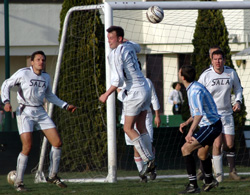
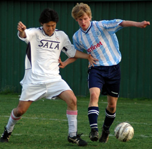
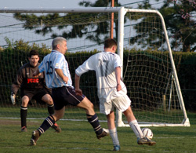

|
YC&AC, Sat 25th March. A solid display by Sala on Saturday left any lingering YCAC title aspirations in tatters.
A clear blue sky tempered only by the gallons of filth pumped into the atmosphere from nearby factories set both teams in good stead. Sala have still yet to lose to YCAC in the TML and they felt confident enough of taking at least a point back to Chiba.
Both teams fielded under strength sides, Sala managing to piece together a paltry 12 players for such an important game.
In the first half, Sala looked the livelier of the two teams. Toby headed at the keeper when well placed and then hit the post with a low drive from 20 yards out.
Sala took the lead after about twenty minutes, when Lenny sent Shigeru clear to beat the YCAC keeper, even affording a few luxury stopovers. The YCAC linesman confused everyone, not for the last time that day, by initially raising his flag, putting it down again and then raising it again after the ball was in the net, but Pietro waved him away. 1v0.
Salas back four (or perhaps five…) held firm for most of the half but YCAC should have got on the score sheet, when a free man at the back post hit the side netting with a header from a free kick.
YCAC did have one good effort from outside the box that Sid managed to cling onto, with a striker hovering dangerously to snap up any errors.
Sala came out for the second half expecting an onslaught, but it didn’t really materialize.
Most of the game was played in the centre circle with the ball taking prolonged aerial vactions, but there were also some nice touches, especially from Shigeru, who showed again that he is certainly among the best midfielders in the League.
Dhugal, who played the whole game in an unfamiliar midfield role, won innumerous headers that helped Sala keep possession and Toby and Brian were constantly “testing” the tight YCAC offside trap.
At one nil, the game was finely balanced and the outcome far from certain, but Sala, whose usual tactics in that situation involve closing their eyes and hoping the ref blows for full time, suddenly found an extra gear.
Shigeru put Brian through but the keeper came out well to smother his effort. Minutes later the roles were reversed. This time Shigeru played a through ball to Brian down the right hand side, the YCAC linesman again putting his flag up straight away. The referee chose to ignore him though and Brian, who had been paying enough attention to keep running anyway, squared the ball past the keeper for Toby to tap into the empty net. Whether it was offside, I couldn’t say, but the alacrity with which the linesman had been flagging throughout the game up until that point, suggested that the referee had decided that it would be a case of the boy who cried wolf. 2v0.
 After the controversy simmered down, the game was restarted and Sala needed only five minutes to get the third.
Lennys consistent running on the left eventually won a corner, and the same player swung it in for Dhugal to volley home.3v0.
Almost right away YCAC came forward and their left winger hit a shot form the corner of the six yard box that Sid did well to block.
In the dying seconds Charles, who had played most of the game in a mysterious floating right back dimension, had to chances both of which were ballooned over, with total disregard for the birds in the trees behind the goal.
All in all it was an excellent performance from every white shirt and another good day out at Yokohama.
Finally a word of congratulations to Doug and Sonoko, who got engaged the day before the game. Im sure the result will suffice as an engagement present for Sonoko, so no need to be throwing money away on rings!
Match photographer: Jonathan Brandt.
Reporter: Roddy Charles.
|